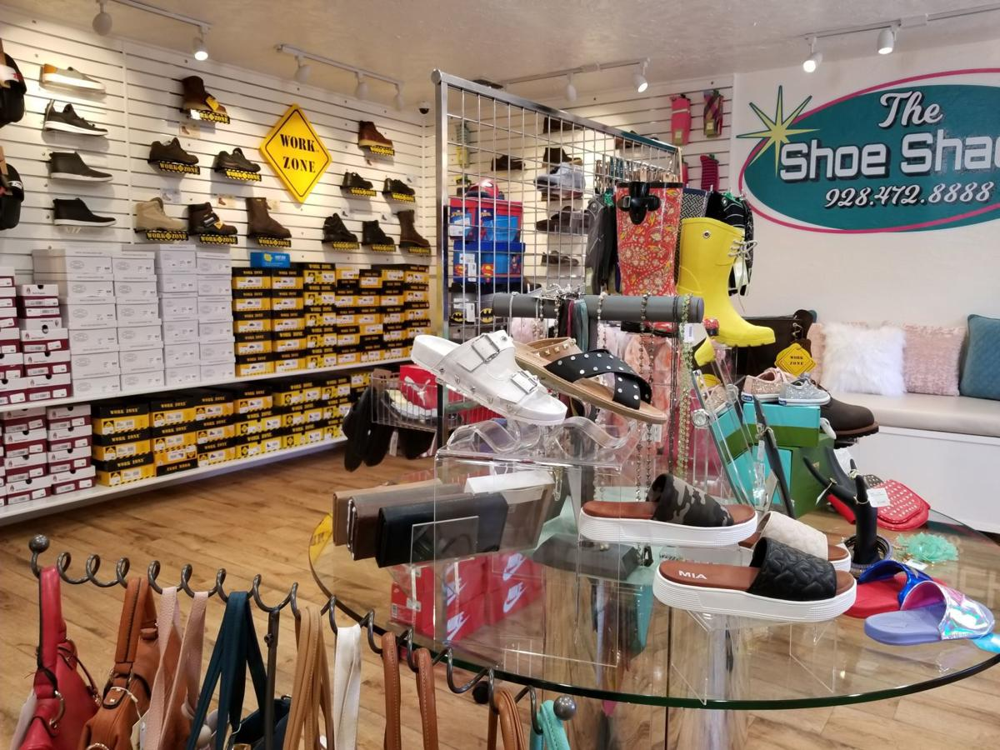

SHOES STORE
A shoe store or a shoe shop is atype of retailer that specializes in selling shoes. From slippers to athletic shoes to boots, the store could also sell shoe horns, shoe polish, etc. In addiction, shoe stores may provide clothing and fashion accessories. A shoe repair shop is a type of business establishment that fixes and remodels shoes and boots.
WHERE WILL YOU FIND THEM
You will find the shoe store on the second floor next to the toy store.